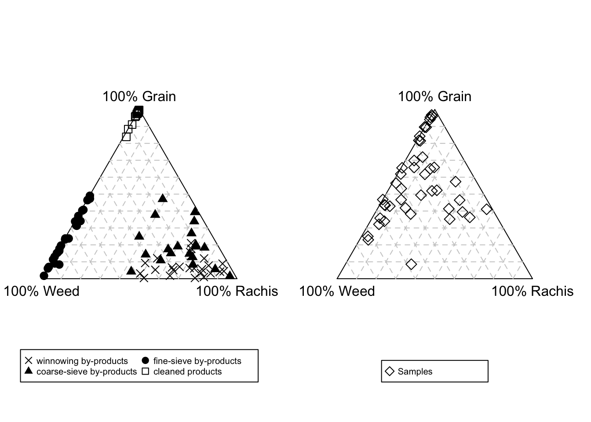
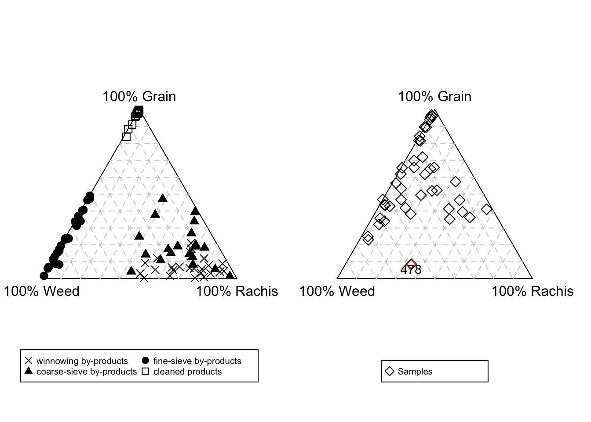
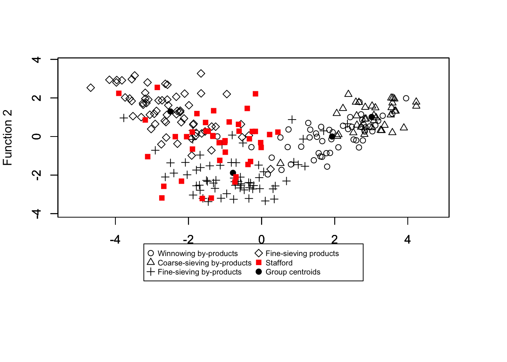
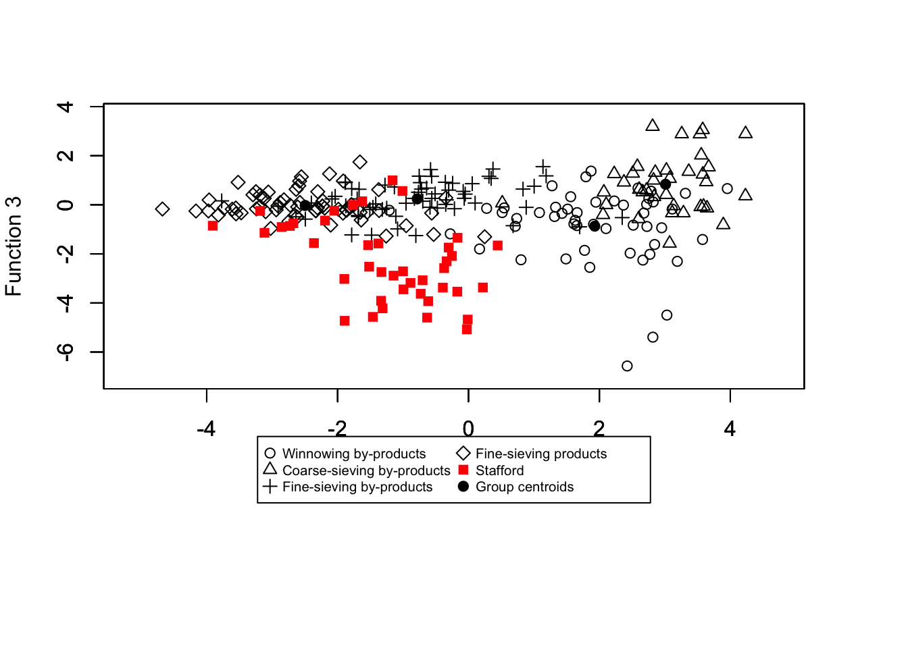
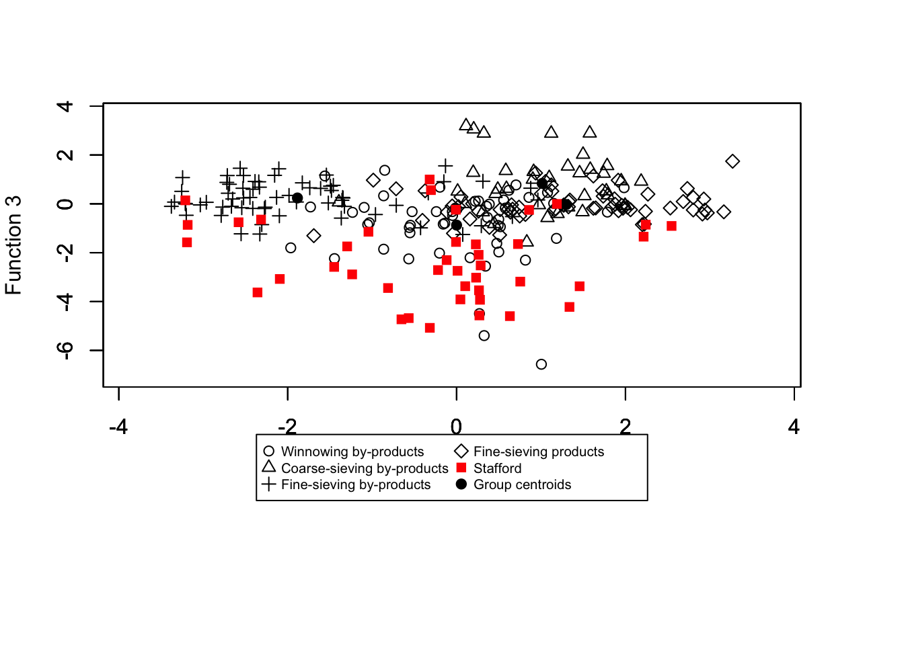
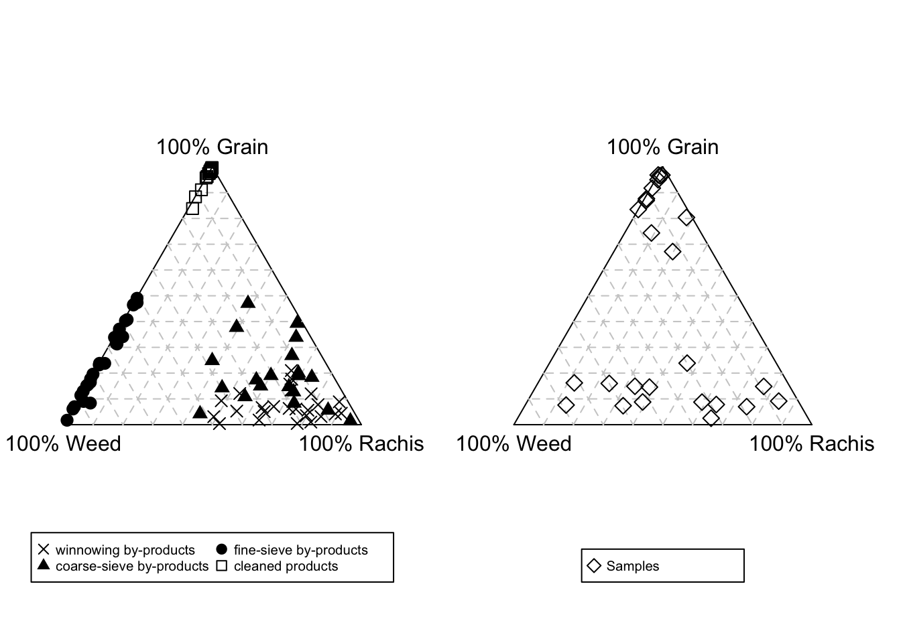
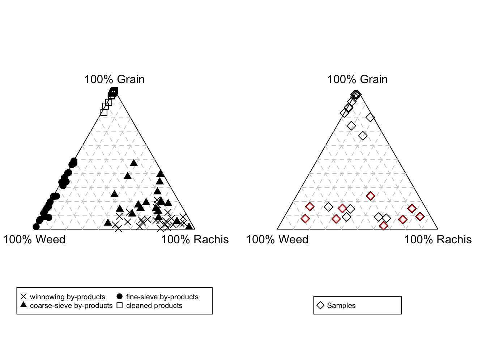
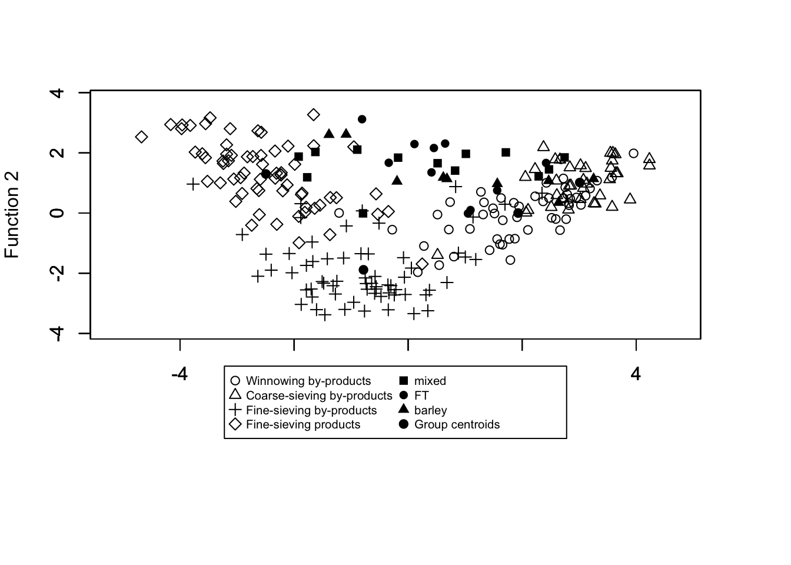
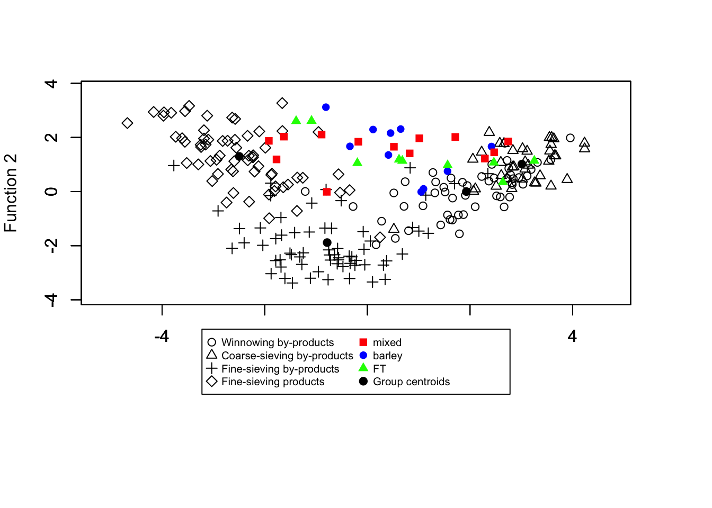
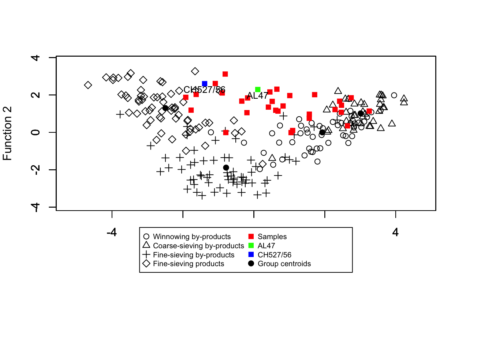

library(CropPro)croppro script doc
CropPro
Stafford
Import data
import data from stafford_raw.xlsx - select sheet stafford_raw
library(readxl)
stafford_raw <- read_excel("stafford_raw.xlsx",
sheet = "stafford_raw")
#remove na values
stafford_raw[7:50][is.na(stafford_raw[7:50])]<-0Triplot data
Data cleaning is required to use the triplot function. Any fruits or pulse items need to be removed.
#removed pulse rows
stafford_nopulse<-stafford_raw[stafford_raw$object!="seed",]
#calculate totals based on column called object (seed, grain, rachis).
#note the seed group now only contains weed seeds and no pulse seeds
GRW<-aggregate(stafford_nopulse[7:50],by=list(stafford_nopulse$object), FUN=sum)The number of items per sample needs to be checked , and any sample with limited items removed. The cutoff/threshold is up to the user and will be assemblage depended. For the Stafford data only samples with 30 or more items were included. Only one sample had less : 1174 and so it was removed
#remove sample 1174 as it only has 9 items
GRW <- GRW[!names(GRW) %in% c("1174")]The data needs to be transposed and organised with column names assigned
GRW_named<-GRW[2:44]
GRWnew<-as.data.frame(t(GRW_named[,]))
colnames(GRWnew)<-c("grain","rachis", "weeds")The function crop.triplot then takes the data and plots it in comparison to the ethnographic data
crop.triplot(grain=GRWnew$grain, rachis=GRWnew$rachis, weeds=GRWnew$weeds)
The function can be modified so that a specific sample/s is highlighted or labeled
crop.triplot(grain=GRWnew$grain, rachis=GRWnew$rachis, weeds=GRWnew$weeds, sample = 16, samplelabel = "478")
Linear discriminant analysis
The other functions within the package relate to the conducting of linear discriminant analysis which classifies the archaeobotanical samples in reference to the ethnographic data. The data again has to be organised and cleaned
##### discriminant analysis #####
#remove na rows in dataset using column codes - leaving only the classified weed samples
cropPdata<-stafford_raw[!is.na(stafford_raw$codes),]
#select just the species, seed attribute and sample columns
cropPdata<-cropPdata[c(1,4,7:50)]
#sum the totals for each sample to check numbers
colSums(cropPdata[3:46]) 461 462 463 464 465 466 467 468 469 470 471 472 473 474 475 478
3272 41 19 15 80 2204 1170 949 36 548 187 17 45 80 52 187
479 480 481 482 483 484 485 486 487 492 505 506 507 508 509 1163
69 172 25 68 117 11 50 289 51 197 64 133 1376 4955 333 274
1164 1165 1166 1167 1168 1170 1171 1172 1173 1174 476 1169
27 160 32 56 28 12 30 38 70 9 8 7 #remove samples 1174, 476, 1169 - have less than 10 items
cropPdata<-cropPdata[1:43]
#transform the data using crop.dataorg. Codes is the column number the seed attribute
#codes fall in and sample is the column number which the samples start in.
datatrans<-crop.dataorg(cropPdata, codes = 2, samples=3)
#run linear discriminant analysis on the transformed data using LDAcrop.pro
cropproc<-LDAcrop.pro(datatrans)[1] "Classification results and linear discriminant scores "
samples Class_std* Prob.1_std* Prob.2_std* Prob.3_std* Prob.4_std* LD1*
1 461 3 0.292 0.000 0.373 0.335 -1.000
2 462 4 0.001 0.000 0.069 0.930 -2.361
3 463 1 0.730 0.000 0.199 0.071 -0.334
4 464 4 0.000 0.000 0.000 1.000 -2.854
5 465 1 0.990 0.000 0.008 0.002 -0.025
6 466 1 0.869 0.000 0.010 0.121 -0.632
7 467 4 0.093 0.000 0.003 0.904 -1.312
8 468 4 0.364 0.000 0.032 0.603 -0.886
9 469 3 0.074 0.000 0.925 0.001 -0.730
10 470 1 0.954 0.005 0.033 0.008 0.446
11 471 3 0.188 0.000 0.806 0.006 -0.303
12 472 3 0.337 0.000 0.569 0.094 -0.993
13 473 3 0.072 0.000 0.927 0.001 -0.701
14 474 4 0.000 0.000 0.000 1.000 -3.907
15 475 3 0.083 0.000 0.875 0.042 -1.145
16 478 3 0.267 0.000 0.728 0.004 -0.372
17 479 1 0.714 0.000 0.004 0.282 -0.392
18 480 1 0.840 0.000 0.038 0.121 -0.616
19 481 3 0.005 0.000 0.754 0.240 -1.160
20 482 4 0.094 0.000 0.324 0.582 -1.892
21 483 1 0.787 0.001 0.107 0.105 -0.253
22 484 4 0.009 0.000 0.028 0.963 -1.533
23 485 3 0.013 0.000 0.764 0.222 -1.009
24 486 1 0.983 0.000 0.012 0.004 0.220
25 487 4 0.106 0.000 0.206 0.688 -1.330
26 492 4 0.034 0.000 0.085 0.881 -1.518
27 505 1 0.980 0.000 0.019 0.002 -0.012
28 506 4 0.011 0.000 0.049 0.940 -1.897
29 507 4 0.244 0.000 0.123 0.633 -1.335
30 508 4 0.212 0.000 0.048 0.741 -1.461
31 509 1 0.953 0.000 0.021 0.026 -0.171
32 1163 3 0.000 0.000 0.995 0.005 -2.192
33 1164 4 0.000 0.000 0.007 0.993 -1.770
34 1165 3 0.000 0.000 0.999 0.001 -2.729
35 1166 3 0.000 0.000 0.995 0.005 -2.676
36 1167 4 0.000 0.000 0.383 0.617 -3.117
37 1168 4 0.000 0.000 0.002 0.998 -3.183
38 1170 3 0.000 0.000 1.000 0.000 -1.376
39 1171 3 0.000 0.000 1.000 0.000 -1.624
40 1172 4 0.001 0.000 0.154 0.845 -2.051
41 1173 4 0.312 0.011 0.002 0.675 -0.167
LD2* LD3*
1 -0.220 -2.711
2 -0.007 -1.561
3 -0.118 -2.303
4 2.546 -0.905
5 -0.317 -5.077
6 0.631 -4.597
7 1.337 -4.221
8 0.754 -3.184
9 -2.358 -3.627
10 0.228 -1.658
11 -1.296 -1.743
12 -0.812 -3.446
13 -2.094 -3.076
14 2.240 -0.853
15 -1.237 -2.888
16 -1.450 -2.582
17 1.457 -3.375
18 0.277 -3.928
19 -0.319 0.997
20 -0.653 -4.728
21 0.261 -2.088
22 0.727 -1.646
23 -0.304 0.562
24 0.102 -3.371
25 0.011 -2.742
26 0.285 -2.522
27 -0.567 -4.678
28 0.231 -3.022
29 0.045 -3.912
30 0.270 -4.569
31 0.265 -3.539
32 -2.316 -0.644
33 1.188 -0.004
34 -3.185 -0.861
35 -2.582 -0.754
36 -1.044 -1.143
37 0.858 -0.249
38 -3.193 -1.576
39 -3.213 0.143
40 -0.009 -0.241
41 2.215 -1.344
[1] "classification table"
Count Percentage
Winnowing by-products 10 24.39
Coarse-sieving by-products 0 0.00
Fine-sieving by-products 14 34.15
Fine-sieving products 17 41.46#plot the results of the LDAcrop.pro in three dimensions
crop.plot3D(cropproc, site ="Stafford")
The data can be plotted as 2D plots as well
#plot the results of LDAcrop.pro in two dimensions - which functions are plotted
#can be changed using Func1 and Func2 arguments
crop.plot2D(cropproc, site = "Stafford", col="red")
crop.plot2D(cropproc, site = "Stafford", col="red", Func1 = 1, Func2=3)
crop.plot2D(cropproc, site = "Stafford", col="red", Func1 = 2, Func2=3)
Tell Brak
Import data and organise
The Tell Brak data needs to be modified to the correct format - removing extra rows and columns. any sample with less than 30 items needs to be removed and the data set transposed once summing of the grain, rachis and weed categories is conducted
######## Tell Brak script ######
library(readxl)
Brak_raw <- read_excel("Brak_raw.xlsx")
brak<-Brak_raw
#select only species and remove top 7 lines
brak[5:44][is.na(brak[5:44])]<-0
#What columns and rows are needed?
samples<-brak[,c(5:44)]
GRW<-aggregate(samples,by=list(brak$Cat1), FUN=sum)
GRW<-GRW[c(1:2,5),]
colSums(GRW[2:41]) AL19/4 AL47 CH253/54 CH484/29 CH485/18
182 979 250 78 410
CH485/45 CH495/46 CH527/56 DH56/115 DH57/93
169 213 208 102 157
DH78/158 DH91/142 ER39/23 ER45/1 ER45/4
264 75 157 154 583
ER45/13 ER45/26 FS140/8 FS178/33 FS191/35
16 752 1466 74 197
FS242/58 FS243/52 FS259/75 FS267/64 FS267/77
80 318 144 36 228
FS309/31 FS351/48 FS351/49 FS355/147 FS1016/68+111
351 386 176 639 559
FS1020/85+110 FS1067 FS1067/84 FS1067/87 FS1067/130
201 127 64 74 158
FS1107/155 FS1527 SS142/65 ST105/26 ST105/27
263 242 952 0 0 #remove samples<30
GRW <- GRW[!names(GRW) %in% c("ST105/26", "ST105/27", "ER45/13")]
colSums(GRW[2:38]) AL19/4 AL47 CH253/54 CH484/29 CH485/18
182 979 250 78 410
CH485/45 CH495/46 CH527/56 DH56/115 DH57/93
169 213 208 102 157
DH78/158 DH91/142 ER39/23 ER45/1 ER45/4
264 75 157 154 583
ER45/26 FS140/8 FS178/33 FS191/35 FS242/58
752 1466 74 197 80
FS243/52 FS259/75 FS267/64 FS267/77 FS309/31
318 144 36 228 351
FS351/48 FS351/49 FS355/147 FS1016/68+111 FS1020/85+110
386 176 639 559 201
FS1067 FS1067/84 FS1067/87 FS1067/130 FS1107/155
127 64 74 158 263
FS1527 SS142/65
242 952 #transpose it
GRWnew<-as.data.frame(t(GRW[,-1]))
colnames(GRWnew)<-c("grain","rachis", "weeds")Triplot graphing
Only the samples which are classified as barley or free-threshing cereal dominant were used in the triplot.
#add column showing classifications and remove mixed samples
#add data frame with classes ( called Classes_brak below)
Classes_brak <- read_excel("Classes_brak.xlsx")
GRWnew$samples<-row.names(GRWnew)
GRW_named<-merge(x=GRWnew, y=Classes_brak, by.x="samples", by.y = "Sample")
GRW_Class<-GRW_named[GRW_named$grouping!="mixed",]This removes all mixed samples. The triplot can be constructed using crop.triplot. If particular samples need to be highlighted -for example all the free-threshing cereal dominated (give metric)
crop.triplot(grain=GRW_Class$grain, rachis=GRW_Class$rachis, weeds=GRW_Class$weeds)
#adds row number otherwise confusing
GRW_Class$rownumber = 1:nrow(GRW_Class)
#highlight particular samples using the row number - all FT samples
crop.triplot(grain=GRW_Class$grain, rachis=GRW_Class$rachis, weeds=GRW_Class$weeds, sample = c(6,7,13,14,17,18,20,21,25), samplelabel = c(""))
Linear discriminant analysis - crop processing
The package CropPro can be used to conduct linear discriminant analysis on the data, like was conducted with the stafford data set. The data needs to be organised, with codes for the species etc (see above). the data thenis tranformed using LDAcrop.pro and the LDA cane be conducted
###discriminant analysis
#remove crops and cats dung related
brak_crop_pro<-brak[brak$Codes!="n",]
brak_crop_pro<-brak_crop_pro[,c(1,4:44)]
#remove samples with less than 20 weed seeds - change to 10
brak2<-brak_crop_pro[3:42]
colSums(brak2) AL19/4 AL47 CH253/54 CH484/29 CH485/18
11 38 106 11 11
CH485/45 CH495/46 CH527/56 DH56/115 DH57/93
96 22 94 48 68
DH78/158 DH91/142 ER39/23 ER45/1 ER45/4
68 36 3 18 24
ER45/13 ER45/26 FS140/8 FS178/33 FS191/35
2 87 79 41 151
FS242/58 FS243/52 FS259/75 FS267/64 FS267/77
24 145 61 9 85
FS309/31 FS351/48 FS351/49 FS355/147 FS1016/68+111
68 66 45 172 96
FS1020/85+110 FS1067 FS1067/84 FS1067/87 FS1067/130
13 4 11 4 3
FS1107/155 FS1527 SS142/65 ST105/26 ST105/27
14 32 514 0 0 samples20<-brak2[,colSums(brak2)>10]
codes<-brak_crop_pro[2]
samples20<-cbind(codes, samples20)
colnames(samples20)[1]<-"codes"
colSums(samples20[2:33]) AL19/4 AL47 CH253/54 CH484/29 CH485/18
11 38 106 11 11
CH485/45 CH495/46 CH527/56 DH56/115 DH57/93
96 22 94 48 68
DH78/158 DH91/142 ER45/1 ER45/4 ER45/26
68 36 18 24 87
FS140/8 FS178/33 FS191/35 FS242/58 FS243/52
79 41 151 24 145
FS259/75 FS267/77 FS309/31 FS351/48 FS351/49
61 85 68 66 45
FS355/147 FS1016/68+111 FS1020/85+110 FS1067/84 FS1107/155
172 96 13 11 14
FS1527 SS142/65
32 514 # data org function
datatrans<-crop.dataorg(samples20, codes = 1, samples=2)
# conduct LDA
cropproc<-LDAcrop.pro(datatrans)[1] "Classification results and linear discriminant scores "
samples Class_std* Prob.1_std* Prob.2_std* Prob.3_std* Prob.4_std*
1 AL19/4 2 0.009 0.988 0.000 0.002
2 AL47 2 0.007 0.775 0.003 0.216
3 CH253/54 1 0.856 0.144 0.000 0.000
4 CH484/29 2 0.010 0.983 0.003 0.004
5 CH485/18 4 0.014 0.351 0.017 0.617
6 CH485/45 1 0.977 0.022 0.001 0.000
7 CH495/46 2 0.046 0.898 0.007 0.049
8 CH527/56 4 0.001 0.000 0.000 0.999
9 DH56/115 4 0.000 0.015 0.000 0.985
10 DH57/93 1 0.907 0.021 0.001 0.072
11 DH78/158 4 0.392 0.024 0.074 0.510
12 DH91/142 3 0.007 0.005 0.743 0.246
13 ER45/1 4 0.000 0.000 0.007 0.993
14 ER45/4 4 0.000 0.000 0.001 0.999
15 ER45/26 4 0.022 0.000 0.001 0.976
16 FS140/8 1 0.971 0.016 0.003 0.009
17 FS178/33 2 0.094 0.905 0.000 0.000
18 FS191/35 4 0.073 0.034 0.018 0.875
19 FS242/58 1 1.000 0.000 0.000 0.000
20 FS243/52 4 0.000 0.003 0.000 0.997
21 FS259/75 1 1.000 0.000 0.000 0.000
22 FS267/77 1 0.999 0.000 0.000 0.001
23 FS309/31 2 0.053 0.947 0.000 0.000
24 FS351/48 2 0.002 0.998 0.000 0.000
25 FS351/49 2 0.000 1.000 0.000 0.000
26 FS355/147 2 0.000 1.000 0.000 0.000
27 FS1016/68+111 1 0.639 0.268 0.092 0.002
28 FS1020/85+110 1 0.984 0.008 0.007 0.000
29 FS1067/84 2 0.007 0.955 0.012 0.026
30 FS1107/155 2 0.009 0.970 0.001 0.020
31 FS1527 4 0.000 0.000 0.001 0.999
32 SS142/65 1 0.957 0.043 0.000 0.000
LD1* LD2* LD3*
1 1.013 1.968 2.802
2 0.111 2.292 3.191
3 2.290 1.219 -1.373
4 0.824 1.411 3.201
5 -0.176 1.841 2.744
6 1.562 0.753 -1.802
7 0.517 1.656 2.277
8 -1.388 2.604 -0.486
9 -0.808 3.118 2.991
10 0.452 2.161 -1.932
11 -0.195 1.053 -0.302
12 -0.791 -0.010 2.176
13 -1.770 1.188 -0.004
14 -1.627 2.030 0.037
15 -0.892 2.107 -1.409
16 0.681 1.136 -1.664
17 2.640 0.348 1.294
18 -0.340 1.671 0.627
19 1.564 0.973 -4.763
20 -1.088 2.613 2.618
21 2.744 1.849 -9.730
22 0.617 1.182 -4.947
23 3.253 1.138 0.804
24 1.714 2.016 3.268
25 2.419 1.665 4.472
26 2.471 1.451 5.002
27 1.049 -0.012 0.681
28 1.094 0.100 -1.692
29 0.410 1.351 3.677
30 0.649 2.309 2.793
31 -1.920 1.875 0.018
32 2.465 1.073 -2.169
[1] "classification table"
Count Percentage
Winnowing by-products 10 31.25
Coarse-sieving by-products 11 34.38
Fine-sieving by-products 1 3.12
Fine-sieving products 10 31.25The data can be plotted using the 3D function for exploration. While the 2D plots can be colour coded according the the class of the samples ( i.e mixed, barley or free-threshing cereal).
#classes
grouped<-merge(x=cropproc, y=Classes_brak, by.x = "Samples", by.y = "Sample")
grouped$pch<-grouped$grouping
grouped$pch[grouped$pch=="barley"]<-15
grouped$pch[grouped$pch=="mixed"]<-16
grouped$pch[grouped$pch=="FT"]<-17
grouped$col<-grouped$grouping
grouped$col[grouped$col=="barley"]<-"red"
grouped$col[grouped$col=="mixed"]<-"blue"
grouped$col[grouped$col=="FT"]<-"green"
crop.plot2D(cropproc, pch=as.numeric(grouped$pch), site = c("mixed", "FT", "barley"))
crop.plot2D(cropproc,col=paste(grouped$col), pch=as.numeric(as.character(grouped$pch)), site = c("mixed", "barley", "FT"))
grouped$lab<-grouped$Samples
grouped$lab<-"red"
grouped$lab[grouped$Samples=="AL47"]<-"green"
grouped$lab[grouped$Samples=="CH527/56"]<-"blue"
crop.plot2D(cropproc,col=paste(grouped$lab), label = c("AL47","CH527/56"), site = c("Samples", "AL47", "CH527/56"))
crop.plot3D(cropproc,gcol = c("black", "grey", "grey48", "grey89"), col=paste(grouped$lab))